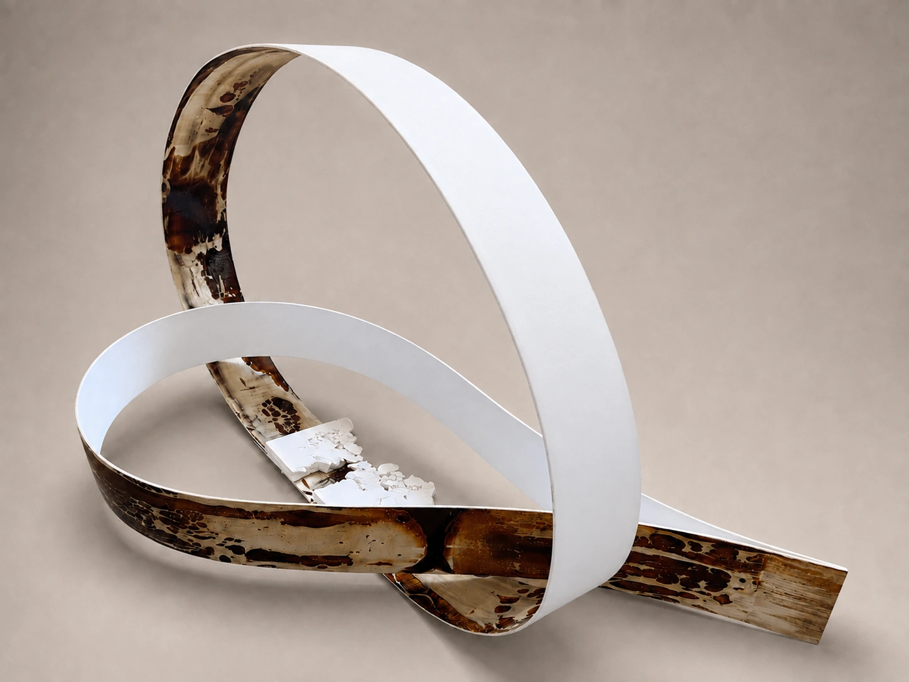
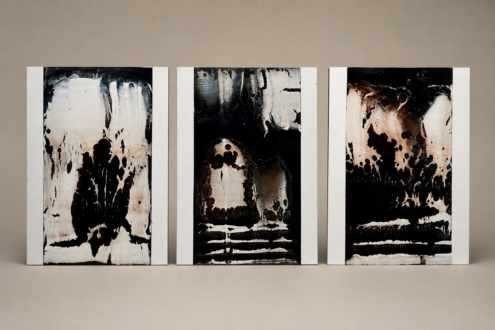
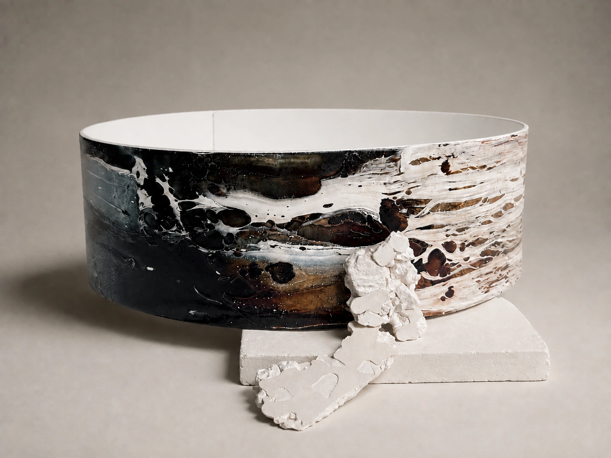
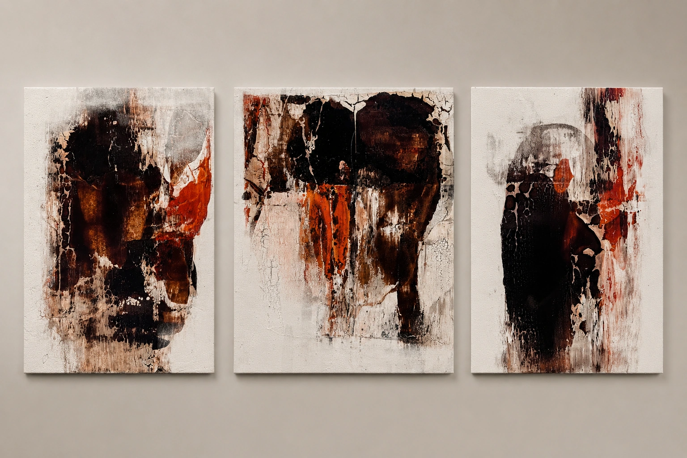
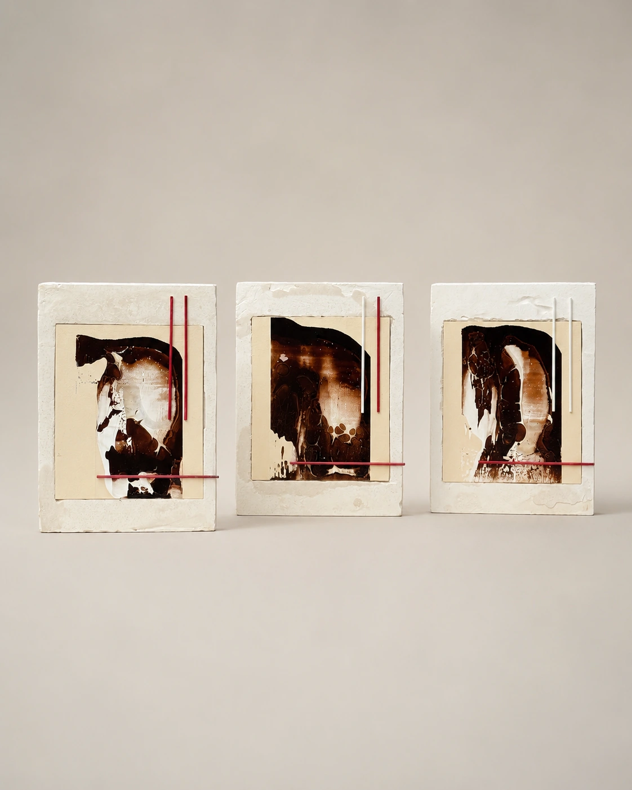
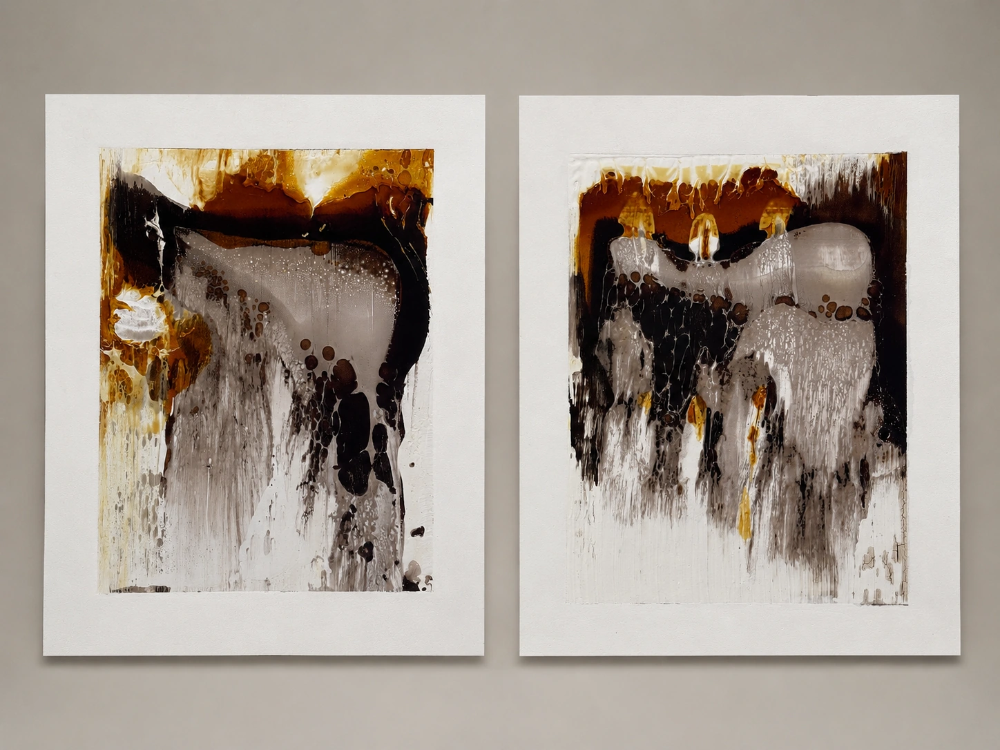
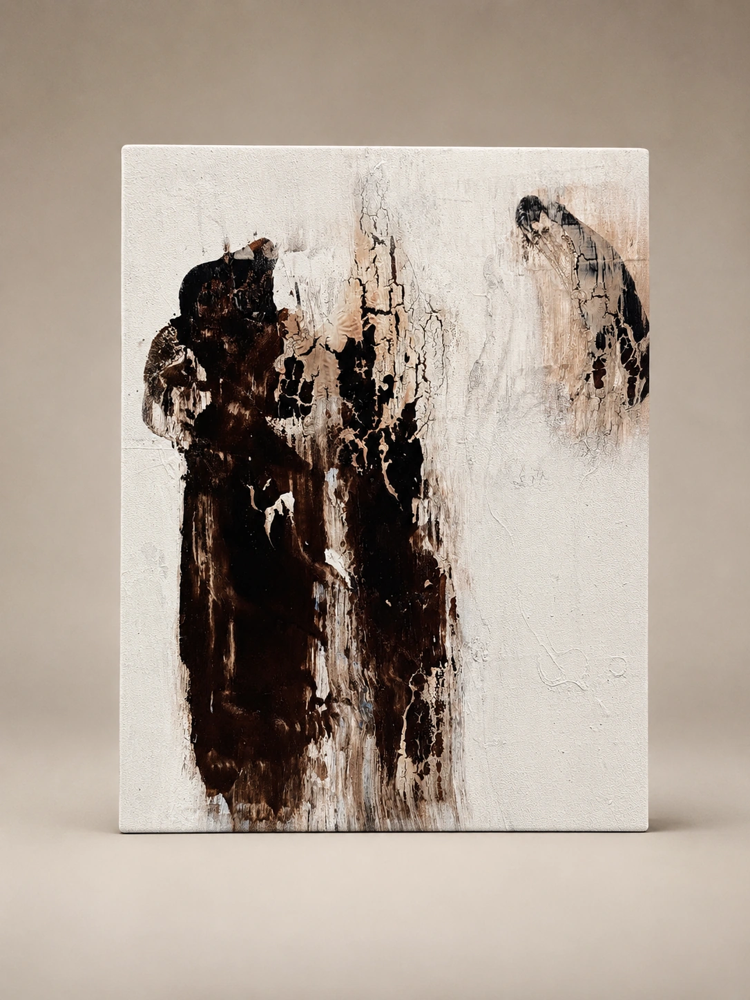
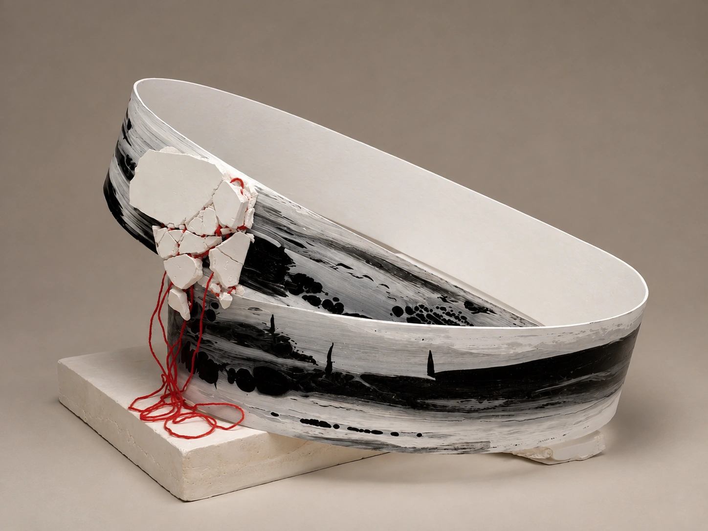
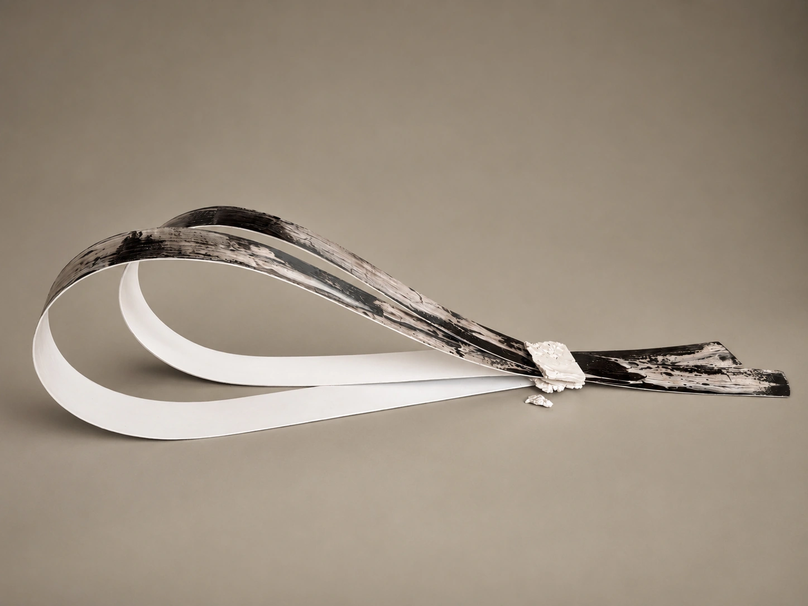

Memory of Form · Object 12026 · object
An interdisciplinary artist working with abstraction, spatial objects and mixed media to explore chronic pain, bodily vulnerability, transformation and support.

The body is not a stable support, but a changing landscape — one that remembers pressure, resists, fractures and learns to hold a new form.
Orlova uses the personal experience of chronic neurological illness as an artistic lens. Her work examines tension, deformation, exhaustion, isolation and the search for support without reducing illness to illustration.
Her method relies on layered surfaces and resistive materials that repel one another. Ruptures, collisions and damaged surfaces become a visual language for disrupted signals, vulnerability and resilience. Since 2026 she has developed interdisciplinary projects at the intersection of art, medicine and social practice.

An interdisciplinary project on chronic pain and the moment when the body ceases to feel like a neutral support and becomes a site of continuous internal work.
The project connects artistic language with conversations around pain, stigma, exhaustion and care, asking how attention and presence can become practical forms of support.
Painting and spatial objects from 2026. Click any image to view it larger.










Recent interdisciplinary work brings visual art into dialogue with medicine and social practice, focusing on how pain becomes visible, shareable and less isolating.
A project about support as an active form of participation that can reduce isolation and return a sense of connection to oneself and others.
Pain does not disappear, but is translated from a closed internal experience into contact, testimony and shared understanding.
Interviews, publications and media coverage of Elena Orlova’s artistic practice and Art + Science projects.
A video interview featuring Elena Orlova and her artistic practice.
Watch on YouTube ↗Born in Bratsk. Lives and works in Moscow. Working in abstract painting since 2015 and expanding into spatial objects, mixed media and Art + Science.
For exhibition proposals, Art + Science collaborations, curatorial enquiries and residency opportunities.